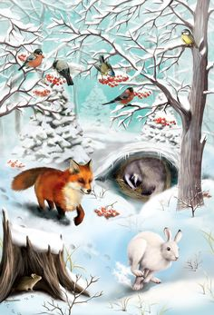
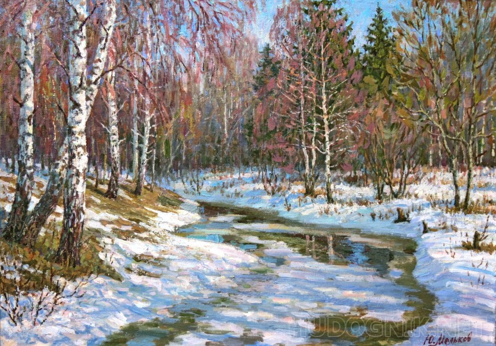

|
|
|
– Cipcirip! Cipcirip! Priviţi, ninge! A venit iarna!
Două vrăbiuţe ţopăie fericite pe o crenguţă de brăduţ. La rădăcina brăduţului e căsuţa iepuraşului Blăniţă Albă.
– A venit iarna?! îşi flutură iepuraşul urechiuşele prin ferestruică. Ce minunăţie! În curând pădurea noastră va fi îmbrăcată într-o mantie de culoarea blăniţei mele. Eu ştiu de ce iarna alege anume această culoare.
– De ce? întreabă vrăbiuţele.
– Fiindcă iarna mă iubeşte foarte mult. Mai mult ca pe alte animăluţe.
– Nu ai pic de modestie, se enervează vrăbiuţele. Eşti un lăudăros. La o adică, baba Iarnă purta cojoc alb mai înainte de a apărea voi, iepuraşii, pe lume! Şi dacă vrei să ştii – Iarna ne iubeşte pe toţi! Pe toţi!
– Da! Da! Se alătură celor două vrăbiuţe o veveriţă roşcată. E adevărat! Iarna ne iubeşte pe toţi!
– Bine… se dă bătut iepuraşul. Nu mai zic nimic. Şi totuşi, şopteşte el pentru sine, pe mine mă iubeşte mai mult.
– Mămulică dragă! Nu cumva ninge?! Iese în uşa bârlogului său ursuleţul Mişani.
– Ninge, Mişani! Ninge! sar bucuroase vrăbiuţele. A venit iarna!
– A venit… Cine a poftit-o? Nu putea să stea la ea acasă? Hm… Nu pricepeam de ce mă trage la somn… Când colo… Baba e de vină. Morr, morr, morrr! Voi fi iarăşi nevoit să dorm trei luni de zile încheiate. Morr, morr, morr…
Şi Mişani se retrage în bârlog, dar peste câteva clipe revine:
– Auziţi?! Strigă el.
– Pe cine strigi, Mişani? întreabă vrăbiuţele.
– Pe voi, răspunde ursuleţul. Am o rugăminte. Imediat cum e primăvară, să mă treziţi! Să nu mă lăsaţi să dorm.
– De ce să dormi atâta amar de vreme, Mişani? Nu poţi şi tu ca şi ceilalţi să dormi doar în timpul nopţii? În curând va veni Moşul cu daruri. Va fi atât de frumos.
– Eh… Aş vrea eu… Dar nu pot. Dacă rămân treaz – mor de foame. Baba îmi ascunde hrana sub gheaţă, sub zăpadă. Nu mă iubeşte bătrâna. Nu mă iubeşte…
Când dorm – visez că pădurea e doldora de căpşuni. Şi astfel trece vremea… Să nu uitaţi să mă treziţi… Vă rog!
– Te vom trezi, Mişani, promit vrăbiuţele apoi zboară pe crenguţele lor de brăduţ.
Iarna aduce în pădure zăpadă şi multă lumină. Zile în şir cad fulgi măşcaţi şi pufoşi. Toată lumea aşteaptă Crăciunul. Crăciunul vine şi pădurea se umple de zarvă şi de veselie. Moş Crăciun împarte daruri.
– Această ulcică cu miere… zice el scotocind prin desagă, pentru cine credeţi că e?

– Pentru mine! Strigă bursucul.
– Ba e a mea! Se bagă la moş vulpea cea roşcată. De altfel… Nu mi-a plăcut niciodată mierea. Să o ia bursucul, hotărăşte ea.
– Această ulcică, zâmbeşte moşul, e pentru Mişani. Nimeni nu trebuie să fie uitat într-o asemenea zi. Nimeni.
– Mişani are prieteni? Întreabă bătrânul.
– Are! Se apropie de moş vrăbiuţele, veveriţa şi iepuraşul. Noi suntem prietenii lui.
– Bravo, îi mângâie cu privirea bătrânul. Duceţi-i mierea. Când se va trezi să-i spuneţi că e de la Moş Crăciun şi că e norocos cu asemenea prieteni.
După sărbători pădurea pare pustie. Toată lumea se odihneşte. Iepuraşul rar îşi scoate urechiuşele pe fereastră. Vrăbiuţele moţăie somnoroase pe brăduţ. Veveriţa ronţăie nuci în cămăruţa sa. Uneori, veselă şi bine dispusă, sare din creangă în creangă privind cum se scutură zăpada.
– Eu ştiu de ce Iarna acoperă pământul cu o plapumă de nea! strigă ea.
– De ce? întreabă plictisite vrăbiuţele.
– Ca să-i fie cald! Ca şi Mişani – Pământul doarme trei luni de zile. Acolo, sub plapumă, se odihneşte iarba, se odihnesc floricelele ce vor răsări la primăvară. Iernii îi este frică să nu le îngheţe gerul pe toate.
– Gerul nu ştie de milă, oftează vrăbiuţele. Oare când va veni primăvara?
– Nu degrabă… Iarna e abia la început. Şi veveriţa intră în scorburică să ronţăie nuci.
Zilele sunt scurte, nopţile – lungi, vremea trece greu. Totuşi, într-o bună zi Iarna îşi ia aşternuturile albe şi pleacă. Ce mai bucurie!
– Cipcirip! Cipcirip! A venit Primăvara!
Odată cu venirea primăverii, pădurea se trezeşte la viaţă. Peste tot fierbe munca. Vrăbiuţele se grăbesc să-şi clădească o nouă căsuţă. Adună crenguţe, firicele de iarbă uscată, le lipesc împreună şi căsuţa e gata.
– Dar unde e Mişani? Îşi aminteşte veveriţa.
– Aoleu! Am uitat! Se agită vrăbiuţele.
– Cipcirip! Cipcirip! Aleargă ele spre căsuţa ursuleţului. Trezeşte-te, Mişani! A venit primăvara!
În bârlog, nici o mişcare.

– Nu se trezeşte, oftează o vrăbiuţă.
– O fi păţit ceva, e îngrijorată cealaltă.
– Trebuie să intrăm să vedem, propune veveriţa.
Aerul din încăperea unde doarme Mişani e atât de îmbâcsit, atât de greu încât toţi trei – mai să leşine.
– Să deschidem ferestrele! Strigă veveriţa. Să aerisim, să lăsăm să pătrundă lumina!
– Slavă Domnului că e viu. Ce mizerie e aici…
Şi vrăbiuţele împreună cu veveriţa, cărora li se alătură şi Blăniţă Albă, imediat se pun pe treabă. În scurt timp, locuinţa lui Mişani, e de nerecunoscut. Pe pereţii proaspăt vopsiţi, veveriţa desenează mănunchiuri de căpşuni. Draperiile vechi sunt înlocuite cu altele noi, de culoare roz, cu albinuţe şi fluturaşi coloraţi pe ele. Podeaua e spălată şi acoperită cu covoraşe moi. Un scăunaş lung, de lângă perete, e învelit cu un ţol în dungi de toate culorile. Nu mai e nimic de făcut. Prietenii se aşează pe scăunaş şi aşteaptă să se trezească Mişani.
– Trezeşte-te, Mişani! Trezeşte-te! Îşi pierd răbdarea vrăbiuţele. A venit Primăvara! Nu e timp de dormit!
– Ştiţi ceva? Zice o vrăbiuţă. Mă duc să-l gâdil la tălpi. Va face ochi imediat.
– Îhî, zâmbeşte pe sub mustăţi iepuraşul. Du-te… O labă de-a lui Mişani şi socoteşte că nu mai are cine-ţi cloci ouăle.
– Atunci? Ce e de făcut? Dacă aşteptăm până se trezeşte de bună voie – ne prinde iarna aici.
– Nu vă enervaţi, îi sfătuieşte veveriţa. Acuş îl trezim. Aduceţi ulcica cu miere de la Moş Crăciun! Puneţi samovarul. La aroma ceaiului cu miere – Mişani nu va rezista.
Aburii ceaiului umple toată încăperea.
– Ce miros plăcut, deschide un ochi Mişani. Miroase a primăvară. Aoleu! Nu cumva? A venit? Sare el speriat de pe cuptor.
– A venit, a venit! Dacă mai dormi, primăvara pleacă fără să o vezi, glumeşte iepuraşul.
Mişani iese în uşa bârlogului. Îşi întinde lăbuţele, răsuflă din toţi plămânii. Pădurea e aproape verde. Peste tot flori, zumzet de albine, ciripit de păsărele. Cerul e albastru, soarele e vesel.
– Ce minunată e Primăvara, se întoarce Mişani la prietenii lui. Cu această ocazie, nu ar fi rău să chefuim! Sunt flămând ca un lup! Apoi, observând ulcica cu miere, o duce la gură şi nu se opreşte până nu dă de fund. Vrăbiuţele, iepuraşul şi veveriţa se strecoară afară pe neobservate.
– Uf… L-am trezit, se bucură vrăbiuţele. Acum la treabă! Nu e vreme de chefuri! O zi de primăvară hrăneşte un an!
|
Tabel de stare a caracterelor |
Animal |
Stare |
Anotimp |
|---|---|---|
|
Vrăbiuţe |
Somnoroase pe brăduţ |
Iarna |
|
Trezește Mişani |
Primavara |
|
|
Iepuraşul |
Rar îşi scoate urechiuşele |
Iarna |
|
Trezește Mişani |
Primavara |
|
|
Mişani |
Adormit |
Iarna |
|
Se trezește |
Primavara |
|
|
Moş Crăciun |
Oferă cadouri |
Iarna |
|
Odihna |
Primavara |
|
|
Veveriţă |
Ronţăie nuci |
Iarna |
|
Trezește Mişani |
Primavara |
|